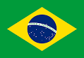
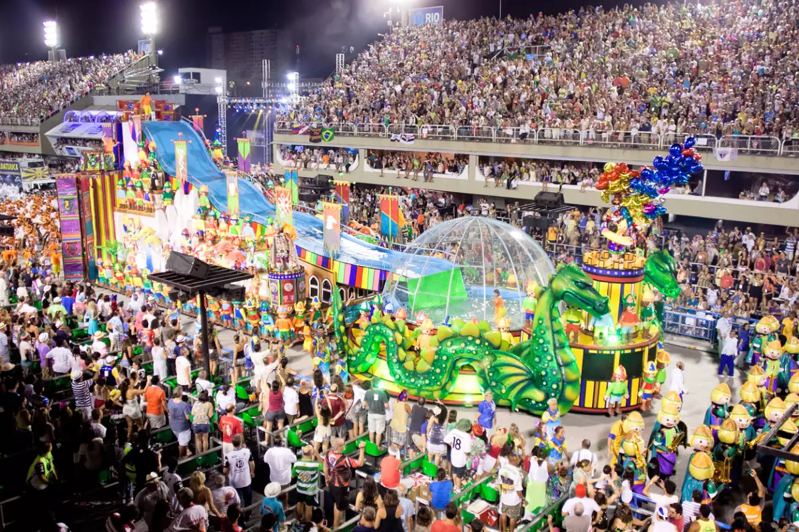
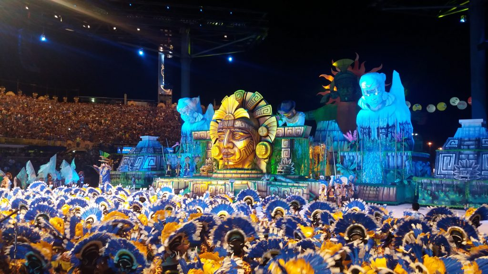
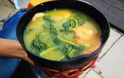
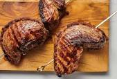
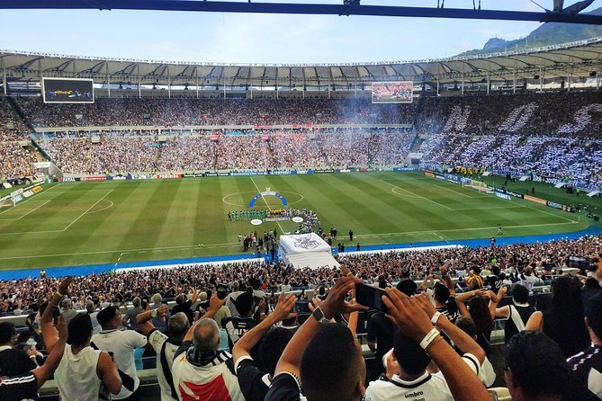
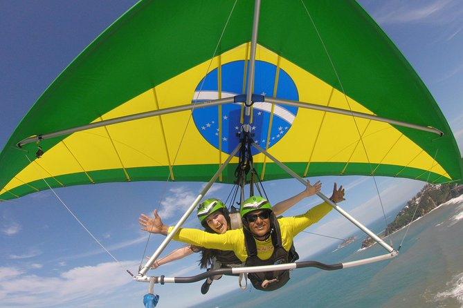
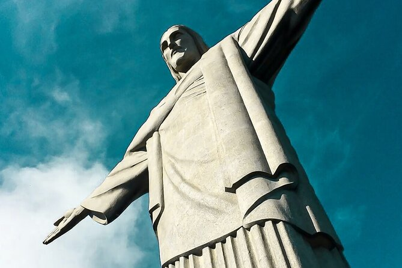
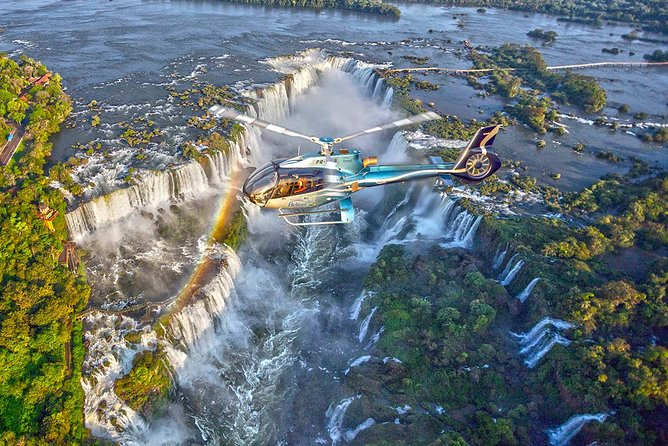
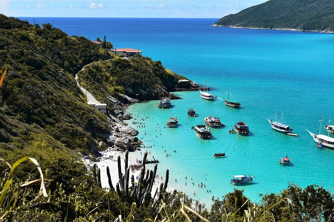

El Brasil es una importante potencial agrícola e industrial y la mayor economía de América Latina y el Caribe. Es el cuarto mayor productor agrícola en el mundo, el primer productor de café, caña de azúcar y cítricos y el segundo mayor productor de soja, carne de vacuno y aves de corral. Brazil es un pais con mucha cultura, se reconoze tambien por su gran carnaval de brazil.Brasil está conformado por muy diversos pueblos, lo que se refleja en su cultura, que posee elementos principalmente indígenas, africanos y europeos. Brazil es tambien reconocido por su gran pasion hacia el futbol, copas ganadas etc.

Eventos importantes
Carnaval en Río de Janeiro

En Brasil, los carnavales tendrás una duración de 9 días, iniciando el viernes 17 de febrero y finalizando el sábado 25 del mismo mes. Conoce aquí qué días se celebra, cuál es el origen y todos los detalles que tienes que saber sobre la popular fiesta de los Carnavales de Río de Janeiro.Las celebraciones de carnaval fueron llevadas a Brasil por navegantes españoles, portugueses y neerlandeses donde se mezclaron con la cultura afro-brasileña, adquiriendo su carácter especial, y
se asocian con desfiles con carrozas, disfraces, bailes populares y excesos.
São João en Paraíba
São João, también llamada Festa Junina, es una gran parte de la cultura brasileña. Cada junio, los brasileños celebran a los santos Juan, Antonio y Pedro. También es momento de celebrar la época de la cosecha, por lo que las fiestas se llenan de comida tradicional hecha principalmente de maíz, como ‘canjica’, ‘pamonha’, ‘pipoca’, ‘curau’, y mucho más.La fiesta de São João en Campina Grande, Paraíba, es la más grande del mundo. Dura todo el mes de junio. ¡Sí, todos los 31 días del mes!.Esta festividad se celebra con comida, bailes, atracciones, conciertos y fogatas. La fiesta ocurre en el Parque do Povo, un lugar gratuito donde todos son bienvenidos.
Parintins

El Festival de Folclore de Parintins es una celebración anual popular que se lleva a cabo en la Amazonia. Es uno de los festivales brasileños más famosos del país, casi tan grande como el Carnaval. Ocurre todos los años el último fin de semana de junio.Esta fiesta es una parte importante del folclore y la cultura brasileña. Es una obra interactiva que cuenta la leyenda urbana de la muerte y resurrección de un buey como forma de crítica social. Dos grupos principales, Caprichoso y Garantido, compiten cada año para ver cuál cuenta la mejor historia. Cada equipo intenta superar al otro en un desfile, con bailes, cantos y carrozas alegóricas. La actuación se basa en el folclore amazónico local y la cultura indígena.
Peão de Barretos
Aunque esta es una fiesta controvertida hoy en día, sigue siendo un gran festival en Brasil. En realidad, es uno de los festivales brasileños más famosos de América Latina. Ocurre durante el mes de agosto en São Paulo y dura alrededor de 10 días.Este festival es el festival campestre más grande de Brasil, con rodeos, conciertos en vivo, competencias de soplar cuernos, coronación de la reina del rodeo y otras atracciones tradicionales.Las cifras de la Fiesta Peão de Barretos son impresionantes: casi 100 mil visitantes al día, 600 vaqueros y vaqueras compitiendo, más de 3.000 animales atendidos, más de 2 mil personas trabajando en la producción y más de 100 atracciones. El lugar del festival también es enorme: alrededor de 272 acres,
incluidos patios de comidas y áreas de campamento para los visitantes.
COMIDAS TIPICAS
Arroz cocido con pequi=El pequi es una nuez o castaña de intenso sabor y oriunda de este país. Se cocina en agua con sal y luego se junta al arroz.Es muy consumido en todo el país, sobre todo en Brasilia, su capital. Suele estar acompañado de pollo con especies.
Tacacá=Si te gustan los camarones, te encantará este platillo típico del Amazonas. Consiste en un caldo caliente elaborado con yuca, hojas de jambú (una hierba amazónica) y camarones. Es un plato tan popular, que en las calles es común que te consigas con las “tacacazeiras” o vendedoras de esta sopa que te saciará por completo.

Vatapá=Es un acompañante muy frecuente para distintas recetas del Brasil. Tiene una textura cremosa y se prepara con harina o pan, camarones, jengibre, leche de coco, pimienta malagueta, maní molido y leche de coco.
Acarajé=Si te gustan las comidas fritas te estarás preguntando qué comer en Brasil y que tenga una textura crocante. La mejor respuesta es el acarajé.Se trata de unas fritangas que se comen mucho en Bahía. Están hechas de frijoles y camarón y se acompañan con vatapá.
Picanha=Una de las comidas brasileñas más populares en todo el mundo es la picanha (o picaña, como diríamos en español). Se trata de un corte especial de carne de bovino, con intenso sabor y textura muy suave. Se prepara a la parrilla, en carbones o leña. En otros países se le conoce a esta parte de la res como punta trasera, punta de cadera, anca o tapa de cuadril.

SITIOS TURISTICOS PARA VISITAR
Río de Janeiro
Probablemente el lugar mas conocido de Brasil a nivel mundial, sede de grandes eventos deportivos como las olimpiadas de este año 2016, sus maravillosos parajes, entre los que destacan sus playas, montañas y construcciones, han dejado maravillados ya a millones de personas. Igual de encantadora es la gente que habita en este idílico lugar, donde la fiesta forma parte de la cultura local.
Parque do Ibirapuera (São Paulo)
Si vas a São Paulo encontrarás mucho arte por las calles, en los museos y centros culturales. Debes visitar también al Parque de Ibirapuera, muy tradicional para los que viven en esta ciudad. Así, podés disfrutar de sus paisajes y caminar o andar en bicicleta, por ejemplo. También hay exposiciones, como en el Museo Afro Brasil, y eventos culturales
Pelourinho (Salvador)
Pelourinho es otro de los lugares turísticos que debes conocer en Brasil. El barrio está en el corazón de la ciudad y está lleno de atracciones típicas. Podés visitar la iglesia Nossa Senhora do Rosário dos Pretos, la Casa de Jorge Amado, espacios de estilo colonial, probar la comida bahiana y mucho más.
ACTIVIDADES PARA HACER
Partido de fútbol en Río de Janeiro
Asista a un partido de fútbol en Río de Janeiro durante su estancia. Con un guía local, se unirá a los miles de aficionados entusiastas en uno de los estadios para animar a un equipo local. Conozca los vítores y los cánticos locales y escuche los comentarios de su guía sobre la historia y las tradiciones del fútbol en Río. Esta experiencia incluye una entrada general y el transporte de ida y vuelta desde su hotel.

Vuelo en ala delta Experiencia en ala delta Rotorfly
Vuele sobre Río de Janeiro en este tour de ala delta o parapente. No es necesario experiencia. Reciba una breve sesión de entrenamiento antes de salir de la rampa Pedra Bonita, ubicada dentro del Parque Nacional Tijuca. Disfruta de una perspectiva única de la ciudad antes de aterrizar en la playa de São Conrado. La duración del vuelo depende de las condiciones climáticas.

Esenciales de la ciudad de Río incluyendo el Cristo Redentor y Pan de Azúcar
Recorra Río de Janeiro a su manera, con un coche privado y conductor, durante esta excursión totalmente personalizable. Puede elegir los lugares emblemáticos y atracciones que le gustaría visitar, como el Cristo Redentor del Corcovado, el Pan de Azúcar, la Escalera de Selarón, la Catedral Metropolitana y las playas más famosas de la ciudad. Aprenda sobre la comida, el idioma, la cultura y la historia de la ciudad y sus habitantes gracias a su guía local experto mientras explora. Se incluye el transporte ida y vuelta en un cómodo vehículo privado con aire acondicionado.

Vuelo panorámico en helicóptero sobre las cataratas del Iguazú
Experimente vistas inigualables de las cataratas del Iguazú, una de las 7 nuevas maravillas de la naturaleza, durante un paseo panorámico en helicóptero que revela los lados argentino y brasileño de las cataratas. Puede elegir una hora de despegue que se adapte a su horario, antes de volar y beneficiarse de los comentarios del piloto para orientarlo y llamar su atención sobre los principales lugares de interés.

Arraial do Cabo con Paseo en Barco y Almuerzo - Desde Río de Janeiro
Cambia el bullicio de Río de Janeiro por la belleza tropical de Arraial do Cabo, conocido por los lugareños como el Caribe brasileño, en un tour de un día completo que se encarga de traslados, actividades, comidas y guías para que no tengas que hacerlo tú. Dejar que otra persona conduzca le permite sentarse y disfrutar del paisaje, mientras que las paradas para nadar en aguas cristalinas aumentan sus posibilidades de observar la vida silvestre.

Fun facts
1.- Brasil comparte frontera con nueve países
2.- La capital de Brasil es Brasilia
4.- Brasil es el único país de América del Sur dónde el idioma oficial no es el español
5.- En Brasil viven tribus que aún no han tenido contacto con la vida moderna
6.- Tiene una isla que tiene prohibido el acceso por ser uno de los lugares más peligrosos del mundo la cual es la isla de las Cobras
7.- Brasil tiene un tercio de las selvas tropicales del planeta
8.- Brasil fue el último país de América en abolir la esclavitud
9.- La música samba fue llevada a Brasil por las tribus africanas bantú
10.- Brasil ha ganado la Copa del Mundo cinco veces
11.- Brasil tiene la playa más grande del mundo que es la playa Praia do Cassino
12.- Brasil tiene la mayor comunidad de japoneses fuera de Japón
13.- El Cristo Redentor de Rio es una de las 7 nuevas maravillas del mundo
14.- Brasil es el mayor exportador de café del mundo
15.-Brasil es de los países del mundo con más gimnasios
16.- La comida típica de Brasil no es la más habitual
17.- El apellido más popular en Brasil es Silva
18.- Cometer un delito en días festivos tiene agravante
19.- Brasil es el sitio del mundo con mayor número de católicos


.jpg)
.jpg)